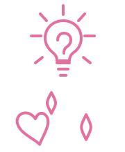

Chaos coordinator. Checklist believer. Project manager.
I’m at my best in the messy middle: when teams are trying to understand what changed, what matters, who owns what, and how to move forward.
I don’t walk into a situation assuming I already know the answer.
I start by listening, learning the system, and understanding what people are carrying. From there, I help create practical structure: the documentation, project rhythms, learning support, AI workflows, and follow-through that make the next step easier to see.
My goal is not to add more process for the sake of process. It is to make complex work clearer, lighter, and easier for people to carry.

Listen first. Structure second. Move forward together.
I believe good structure should make work clearer, not heavier.
First, I listen and learn the systems. I ask better questions, look for patterns, and work to understand the people doing the work. Then I help teams create the right amount of structure so priorities, processes, tools, and people can work better together.
My goal is simple: make the work easier to understand, easier to sustain, and more efficient for the people doing it.
I bring this approach to learning design, facilitation, project and process leadership, AI enablement, knowledge systems, and operational visibility.
Where learning, process, AI, knowledge, and operations meet.
My work sits where people, learning, process, tools, AI, knowledge, and execution meet. I start by listening, learning the system, and understanding what people are carrying. Then I help create the right amount of structure so work becomes clearer, lighter, and easier to move forward.
Learning + Facilitation
I design and facilitate learning experiences that help people understand what is changing, build confidence, and apply new skills in real work.
Project + Process Leadership
I bring structure to ambiguous work through clear ownership, timelines, dependencies, risks, decisions, and follow-through.
AI Enablement
I help teams explore AI responsibly and practically by sharing examples, prompt practices, resources, and workflows people can actually use.
Knowledge Systems
I design, audit, maintain, and improve knowledge spaces so information is easier to find, trust, share, and sustain.
Operational Visibility
I use metrics, trends, dashboards, audits, and operational signals to clarify what is happening and support better decisions.
Team Effectiveness + Change
I help teams build shared language, working rhythms, trust, role clarity, and practical next steps during change.
From concept to launched website
The Tri-Parish Website Redesign is a full-cycle project example: a real community need, a clearer site structure, user-friendly content, technical setup, domain coordination, and a public launch.
Tri-Parish Website Redesign
I helped take a multi-parish website project from early planning to launched product by clarifying the audience, organizing content, writing page copy, supporting the build, and preparing the site for launch.
Project, process, and operational support
My project work focuses on turning complex, cross-functional needs into clear plans, aligned teams, visible risks, usable workflows, and measurable follow-through.
Personalized Learning Journey Pilot
Challenge: A cross-functional pilot needed clear coordination across multiple partners, workstreams, and success measures.
Action: Coordinated stakeholders, tracked workstream needs, supported readiness planning, clarified follow-up, and helped connect training, analytics, exam operations, vendor management, and internal teams.
Result: Supported pilot tracks that improved Case AHT by 1+ minute to nearly 1.5 minutes while also improving CSAT and Issue Resolution in key paths.
Project Operating Rhythm
Challenge: Work was moving across different people, priorities, and timelines, but teams needed a clearer way to see status, ownership, risks, and next steps.
Action: Built repeatable structures for project tracking, weekly status rhythms, action items, decisions, risks, dependencies, and stakeholder updates.
Result: Improved visibility, reduced confusion, and helped teams move with more confidence, shared language, and follow-through.
Enterprise Tool Enablement
Challenge: Teams needed support adopting enterprise tools and workflows without creating more confusion or one-off support needs.
Action: Created documentation, workshops, workflow guidance, and scalable support materials to help teams understand and use the tools.
Result: Helped improve adoption, reduce repeat questions, and make support easier to sustain over time.
Reporting + Visibility Systems
Challenge: Leaders and managers needed clearer visibility into work status, trends, follow-up needs, and operational signals.
Action: Built reporting and visibility tools, including audit workflows, weekly reporting, dashboards, and manager-facing data views.
Result: Created clearer status tracking, stronger follow-up, and better support for decision-making.
Learning, readiness, and team enablement
My learning and enablement work helps teams understand change, adopt tools and workflows, build confidence, and apply information in real work.
Scalable Tool Training Model
Challenge: Teams needed practical support for enterprise tools and workflows without creating more one-off training or repeat questions.
Action: Designed modular learning resources, documentation, workshops, and workflow guidance that helped people understand the tool, the process, and the why behind the work.
Result: Created a repeatable model for scalable tool training and support that could be reused across teams and future needs.
Media Development Enablement
Challenge: Technical specialists needed a clear path to build development skills and support content creation work at scale.
Action: Helped found and scale a media development team, building training, process documentation, standards, and support systems for new contributors.
Result: Supported a sustainable talent pipeline and stronger content development practices for learning and support work.
Performance-Focused Learning
Challenge: Learning work needed to connect to real business outcomes, not just course completion or content delivery.
Action: Designed learning support around clear goals, learner needs, practical application, and performance measures.
Result: Helped create learning experiences that supported measurable improvement, clearer adoption, and stronger follow-through.
Readiness + Adoption Support
Challenge: Teams needed help understanding what was changing, why it mattered, and what they needed to do next.
Action: Created clear messaging, job aids, learning resources, and support materials to help people adopt tools, workflows, and process changes.
Result: Reduced confusion, improved confidence, and helped teams move from awareness to practical use.
Team Enablement + Facilitation
Challenge: Teams needed more than information. They needed shared language, practical support, and a steadier way to align around change.
Action: Created facilitation structures, discussion guides, documentation, and support rhythms that helped groups understand priorities, participate productively, and move from awareness to action.
Result: Strengthened team confidence, improved clarity, and supported better adoption across changing tools, workflows, and expectations.
Core strengths
Project + Program Support
Learning + Adoption
Operational Communication
Credentials that support the work
My credentials support the way I lead projects, organize work, support technical enablement, and help teams adopt new tools, workflows, and processes.
Project + Agile
AI + Workflow
Technical + Apple
Education
Trusted to improve the work.
A former AppleCare manager described my work as top-performer level and highlighted the qualities I try to bring into complex environments: integrity, curiosity, process improvement, customer focus, and the ability to see around corners before issues become bigger problems.
The throughline is consistent: I help people, improve processes, drive what matters, and build practical systems that make the work better for teams and customers.
Training, experience, and selected work samples
Explore additional RSS Senior Specialist work, continued learning, training projects, extended credentials, and selected writing, evaluation, and learning design samples.
Let’s connect
Current contact details
My digital contact card includes my current email, LinkedIn, and portfolio details.